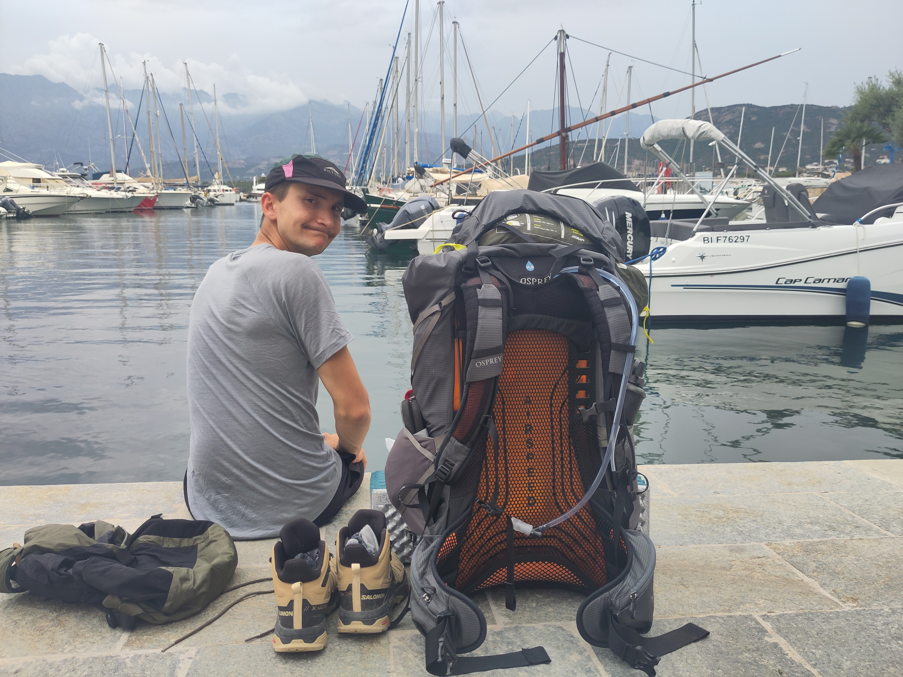

1. Mon profil logiciel
Logiciel & UXMon métier au quotidien tourne autour de l'expérience utilisateur, de la recherche de problèmes sur la connectivité et de la mise en place de tests automatisés.
Candidature Ingénieur Essai Terrain
Aujourd'hui Ingénieur Qualité Logiciel Embarqué chez Decathlon, je souhaite effectuer une transition vers le produit en apportant mes compétences en automatisation et en analyse de données.
Un virage motivé par l'apprentissage par l'action, la recherche d'un impact direct sur les produits physiques et une approche axée sur les usages réels.
Aujourd'hui & Demain
Fluidifier le travail d'IET grâce à l'automatisation et apprendre l'ingénierie produit terrain.
Projet Professionnel
En transparence avec mon management actuel chez Decathlon, je cherche à faire une transition du digital vers le produit physique.
Mon métier au quotidien tourne autour de l'expérience utilisateur, de la recherche de problèmes sur la connectivité et de la mise en place de tests automatisés.
En 1 an et demi d'expérience, j'ai réalisé que j'ai pris bien plus goût à l'expérience client et à la compréhension des besoins des pratiquants qu'à la technique pure.
Rejoindre l'équipe IET Quechua pour participer à la validation fonctionnelle des produits, apprendre le métier sur le footwear et le produit.
Compétences & Apprentissage
Ce que j'apporte à l'équipe
Mon quotidien étant très axé sur l'automatisation, je suis convaincu d'avoir des choses concrètes à apporter pour fluidifier le travail d'IET. Que ce soit sur Google Sheets, via des scripts ou la gestion de données de tests, je peux automatiser des analyses répétitives pour faire gagner du temps aux projets.
Ce que je souhaite apprendre
Je ne maîtrise pas encore la captation des émotions et des ressentis utilisateurs : c'est précisément ce que j'ai hâte d'apprendre à vos côtés. Je souhaite me former aux protocoles de fitting, à l'analyse de la perception et à l'ingénierie spécifique aux chaussures de randonnée.
Mes Pratiques Sportives & Veille Perso
Mes activités outdoor
Passionné de randonnée, j'aime particulièrement partir plusieurs jours en autonomie (GR20, traversées du Vercors, de la Chartreuse, boucle dans les Pyrénées avec le Vignemale). Je pratique aussi le bikepacking (tour de France de 5 mois) et le trail (notamment la Maxi-Race en relais autour du lac d'Annecy).
Ma passion pour le matériel
J'adore analyser et benchmarker mon équipement personnel. J'ai une veille technique très naturelle : je passe beaucoup de temps à éplucher les articles, tests et vidéos sur le matériel de bivouac, de vélo et les chaussures de trail et de randonnée.
Échange à Passy
Je serai au Mountain Store de Passy du 10 au 12 août pour réaliser des essais terrain en VTT électrique. Si tu es disponible pour qu'on se prenne un café et qu'on échange sur le poste, ce sera avec grand plaisir !
